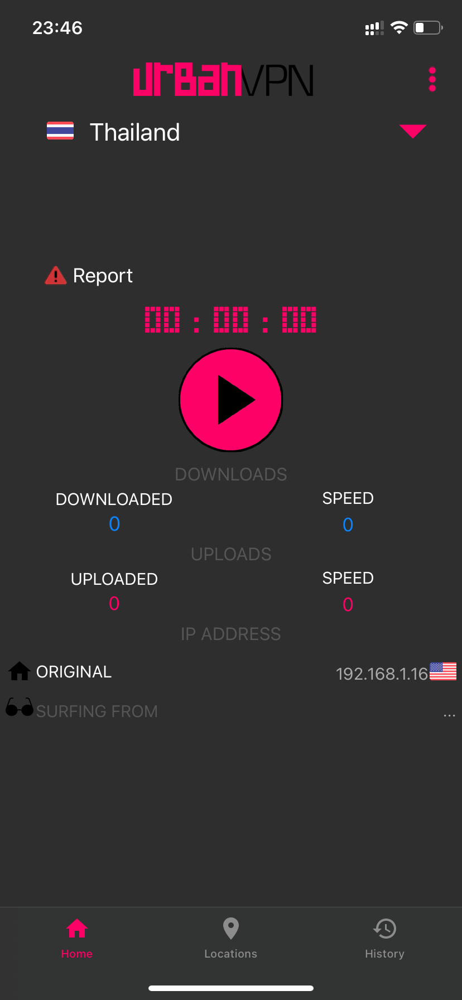
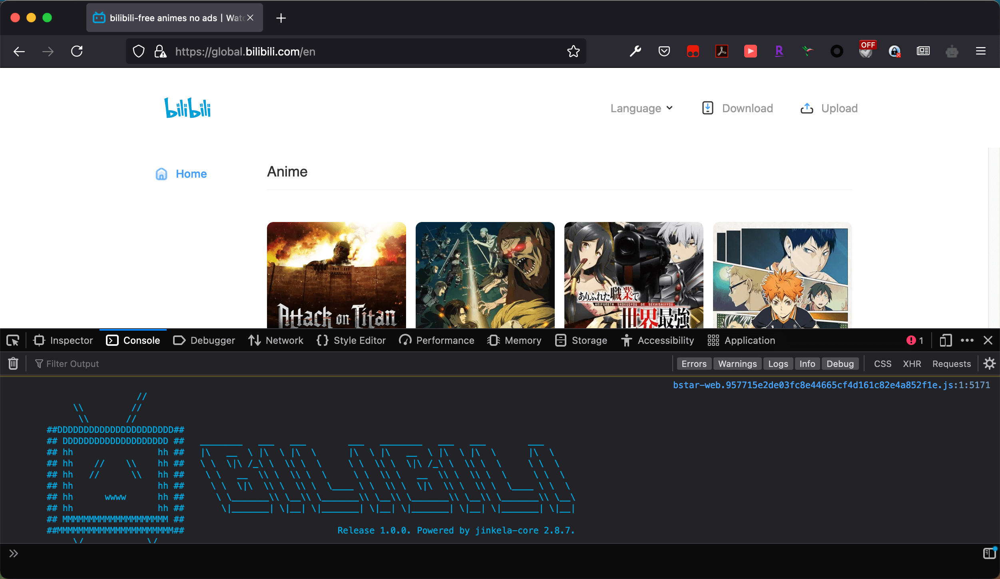
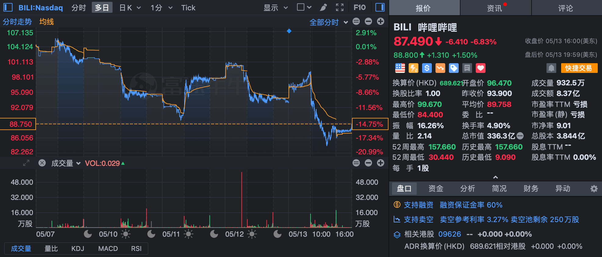

This article introduces some ways to watch Southeast Asia geo-locked animes on Bilibili, and is only available in Chinese.
前几天刚好在B站投了篇专栏，整理了一下目前B站上架的2021年4月新番的海外版权分布情况，以及介绍了如何在已经「成为泰国人」的情况下观看东南亚版权的番剧。但其中最关键的部分——如何成为泰国人——是无法写进专栏的，因此就打算在自己的博客上另写一篇文章来讲解一下。
背景
B站为了开拓海外市场（和爱奇艺、腾讯抢生意）最近上线了东南亚版，并一度上架了《日在校园》（『School Days』）、《缘之空》（『ヨスガノソラ』）等各种意义上都很厉害的动画，引得一众网友争相「收藏番剧」以此来炫耀自己「在B站看片」。虽然这两部发人深省少儿不宜的动画目前下架了，但东南亚版B站目前仍然有许多在主站上永远都不可能播出的作品，比如突破表番下限、被封为「1月最强」的《回复术士的重启人生》（『回復術士のやり直し』），以及因某个前生活区阿婆主口嗨而被惨遭下架的《无职转生》（『無職転生』）等。（如果撇去那些争议情节，其实《无职转生》动画第1期观看体验很棒，原作轻小说和漫画也都十分优秀。）而又因为那个前生活区阿婆主捅出的巨大娄子，从今往后日本新番都要「先审后播」，有些4月新番的大陆版到了5月中旬还未开播，硬是开历史倒车逼老二刺螈们回到了那个靠字幕组和种子追番的时代。在这种氛围下，对于想按时追番又有能力进行壁外调查的技术宅们而言，B站东南亚和港澳台限定番剧就显得弥足珍贵了。
显然，B站也意识到了越来越多人「偷渡香港」、「沦为泰国难民」这一情况以及可能对B站造成的进一步冲击（比如B站没有下架港澳台版《无职转生》至今仍被一些人用来当作冲B站的理由），于是在地域限制的部分也是下足了功夫。最早的时候，只要知道了一部东南亚版番剧的 season_id，不用挂泰国梯子就可以直接通过链接 https://bangumi.bilibili.com/anime/${season_id} 跳转到主站对应的番剧页面 https://www.bilibili.com/bangumi/media/${media_id}/ 并对番剧进行收藏；如今这一跳转已经完全失效（即东南亚版权番剧完全与主站隔离）。再比如以前可以在主站不挂港澳台梯子的情况下搜索到仅限港澳台观看的动画，现在也不行了。博主甚至有理由担心，有朝一日如果不挂梯子，主站的番剧索引页里也会看不到港澳台版权的番剧。
如何获取东南亚国家的梯子
如果你身在大陆，那么你只能去购买一个有泰国、新加坡等东南亚国家节点的机场。下面提到的免费VPN，虽然博主自己没有尝试过在国内能不能连，但稍微想一下的话也知道应该是不可能的。至于机场推荐……因为博主现在人在国外，没有用机场的需求，所以并不清楚相关行情。
如果你身在境外，那么有下面至少2种方法可以连到一个泰国的免费VPN。不过免费VPN的速度一般都会比较慢，安全风险也需要你自行评估。
 Urban VPN
Urban VPN
 Urban VPN
Urban VPNUrban VPN 的浏览器插件和手机客户端都有提供免费泰国VPN。对于电脑端，安装相应浏览器的插件即可，不必安装客户端。
 OpenVPN
OpenVPN
 OpenVPN
OpenVPNOpenVPN 确切地说是一种开源虚拟专用网络协议，虽然有提供客户端，但服务器还是需要自己找的。这里推荐两个提供免费泰国 OpenVPN 服务器的地方：
- VPN Gate 上偶尔可以刷到新马泰的服务器，但实效性和可用性都比较差。Mac 用户下载了
.ovpn配置文件后导入电脑客户端、或者 AirDrop 给 iOS 设备即可。Windows 用户可以直接下载它的 SoftEther VPN 客户端。  OpenVPN Profile Spider 不定期更新公用 OpenVPN 服务器，可以使用内置的导出功能直接把配置文件导出至手机客户端、或者 AirDrop 给 Mac。下载地址：
OpenVPN Profile Spider 不定期更新公用 OpenVPN 服务器，可以使用内置的导出功能直接把配置文件导出至手机客户端、或者 AirDrop 给 Mac。下载地址： 、
、 、Android 安装包。
、Android 安装包。
 OpenVPN Profile Spider
OpenVPN Profile Spider客户端可以在这些地方下载：
- iOS 上使用官方的
 OpenVPN Connect 即可：
OpenVPN Connect 即可： 。
。 - macOS 上也是直接使用官方的即可：官网下载或
brew install --cask openvpn-connect。 - Android 上的
 OpenVPN for Android 更好用：
OpenVPN for Android 更好用： 、Android 安装包。
、Android 安装包。
 OpenVPN for Android 更好用：
OpenVPN for Android 更好用：如何观看仅限东南亚国家的番剧
有了东南亚国家的VPN后，播放东南亚限定的番剧就相对比较容易了。博主的B站专栏已经给出了几种方案，有兴趣的可以去那里阅读。下面仅对那些方案做一点补充，并提供另一个不能写进专栏里的方案。
使用梯子和东南亚版手机应用
东南亚版的手机应用  可以在这里下载：
可以在这里下载：
- iOS：
 需要注意的是，这款应用仅在新加坡、大马、泰国、菲律宾、越南等部分东南亚国家的 App Store 中可下载，因此需要注册一个当地的 App Store 账号。这款应用曾经在
需要注意的是，这款应用仅在新加坡、大马、泰国、菲律宾、越南等部分东南亚国家的 App Store 中可下载，因此需要注册一个当地的 App Store 账号。这款应用曾经在  TestFlight 上发布过测试版，不过现在已经不能用了。
TestFlight 上发布过测试版，不过现在已经不能用了。 - Android：
 锁区情况暂不清楚，但可以用
锁区情况暂不清楚，但可以用  APKPure 等工具绕过 Google Play 直接下载安装
APKPure 等工具绕过 Google Play 直接下载安装.xapk文件。
 TestFlight
TestFlight这款应用除了功能比网页版全之外（可以浏览、搜索番剧等），还有一个好处就是可以获取 season_id 和 episode_id。这两个参数在后面的几种方案里是需要用到的。具体的方法是：选定一部动画的某一话播放，在播放界面点「Share」按钮，再点「Copy link」，就能在剪贴板里得到类似这么一个链接：
1 | https://m.global.bilibili.com/play/36938/377723?s_locale=en_US&from=copy_link&share_medium=iphone |
其中36938为当前番剧的 season_id，377723为当前话的 episode_id。
使用梯子和东南亚版电脑端网页
有了 season_id 或者 episode_id 后，如果想在电脑上看的话，在挂了梯子的情况下可以直接前往东南亚版电脑端的播放页面：
1 | https://global.bilibili.com/play/ss36938 |
不过比较神奇的是，几部尺度比较大的番剧在网页版上无法观看，用手机应用却能看。博主还没有仔细研究过东南亚API的返回值，不太清楚为什么会这样。
使用油猴脚本和公共解析服务器
如果觉得梯子速度慢不想一直挂着，或者因为身处大陆找东南亚节点有难度，但又有 season_id 的情况下，还有另一种看番的方法。
「解除B站区域限制」这个脚本想必是很多留学党在B站上追番的必备工具之一。它目前支持直接在主站的播放页面 https://www.bilibili.com/bangumi/play/ss${season_id} 中播放东南亚版番剧，但由于 BiliPlus 的倒下，现需要用户使用自己的解析服务器。不过好在这里和这里列出了一些网友提供的公共解析服务器。按照教程配置好解析服务器后，就可以直接用脚本在主站上开车看番：
1 | https://www.bilibili.com/bangumi/play/ss36938 |
对于既不在大陆又不在东南亚地区的人，这样看东南亚版番剧的效果还是不错的，因为脚本的工作原理是替换播放源，而海外版（东南亚版和港澳台版）的播放源是通过 Akamai CDN 加速的，像是在美国的话连接速度是很理想的。
彩蛋
JavaScript 脚本叫金坷垃……
还有，我要下车，快放我下车！
参考资料
- 米柚子, “关于泰国番剧研究,” GitHub. [Online]. Available: https://github.com/ipcjs/bilibili-helper/issues/722.
- 社会易姐QwQ, “哔哩哔哩-API收集整理,” GitHub. [Online]. Available: https://github.com/SocialSisterYi/bilibili-API-collect.